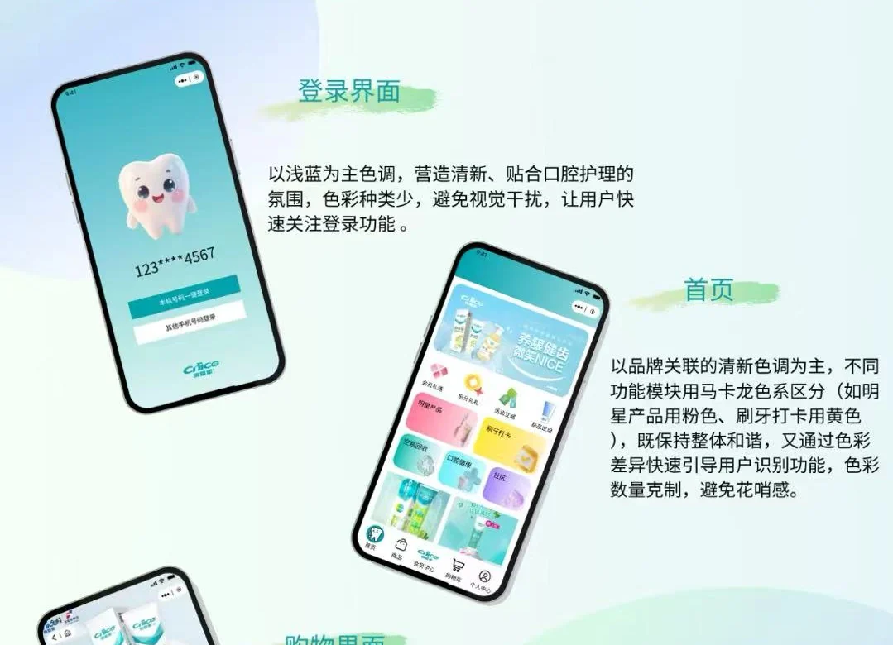

UI DESIGN / 界面设计探索
纳爱斯 · 口腔护理界面
围绕口腔护理场景，将品牌视觉、IP 表达、色彩字体与小程序界面组织成一套设计展示。作为补充作品，呈现从视觉规范到页面表达的探索。
- 时间
- 精选设计作品
- 角色
- 界面与视觉方案展示
- 项目性质
- 界面设计探索
- 方法与工具
- 界面设计 / 品牌视觉 / 设计规范

DESIGN SCOPE
从视觉规范，到核心界面
原始设计长图包含品牌介绍、IP、色彩字体、图标、用户分组、界面与低保真图。本页将长图拆分展示，保留原稿信息，便于逐段查看。
该作品侧重界面与视觉表达，用户分组与功能为设计方案中的设想。进一步验证这些设想，是后续深化的方向。
DESIGN BOARD
分段查看设计原稿
NEXT EXPLORATION
后续深化的方向
进一步深化这个方案，需要优先选择一个明确用户任务，把核心操作流程、组件状态与最终界面连接起来，并统一 IP 和图标的使用规则。
在现有视觉表达基础上，补充实际任务验证和修改记录，可以更清楚地说明设计选择如何服务于使用体验。